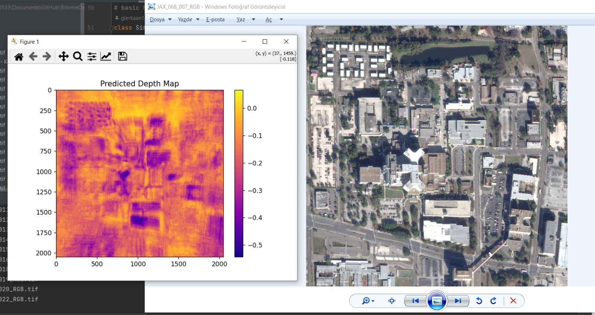

December 5, 2024
Depth map from satellite imagery
-

- We used U-Net to extract the depth of the image.
- As you can see, some places aren't extracted in terms of depth.
Future Works
- We can use a better algorithm to extract the depth of the whole image.